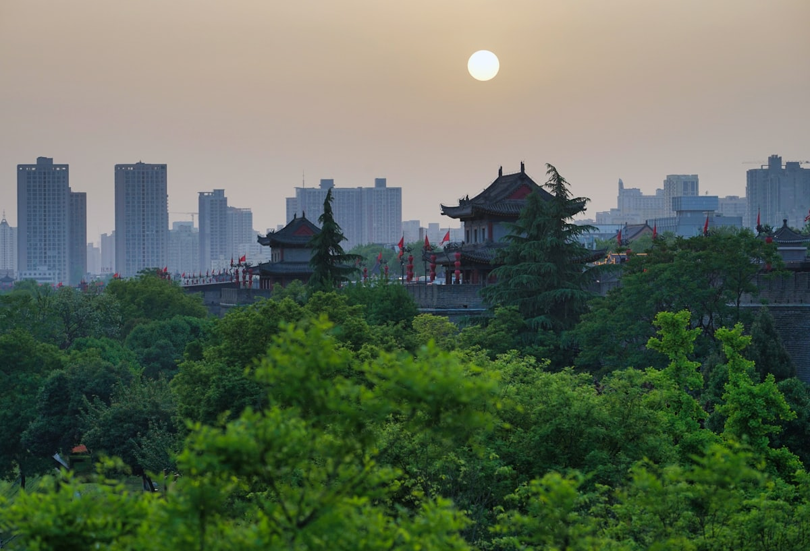
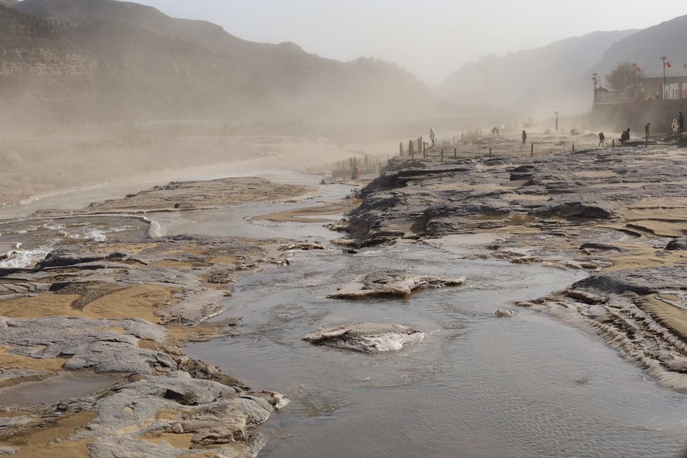
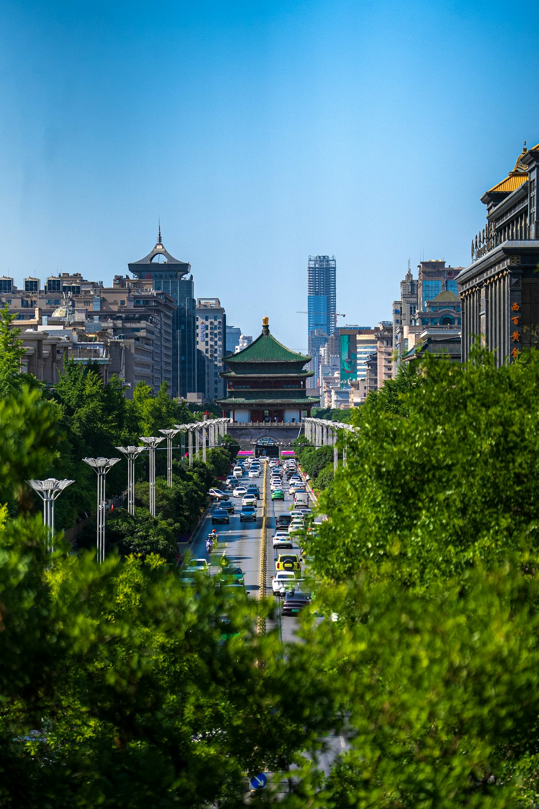
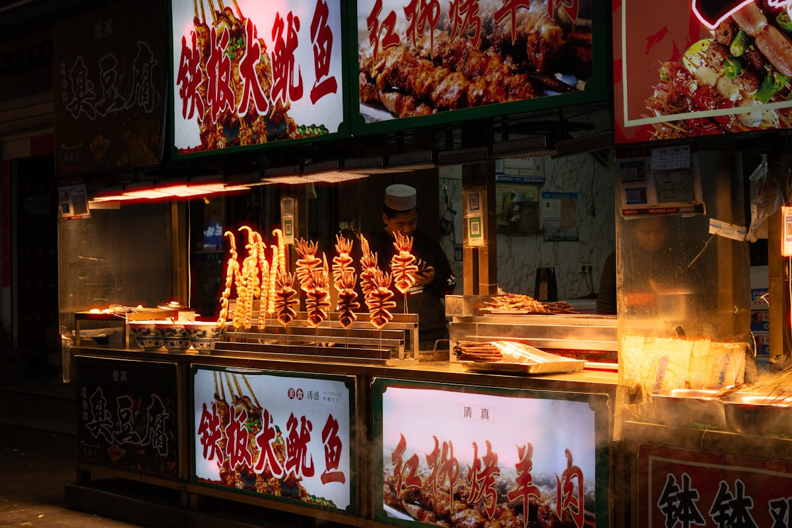
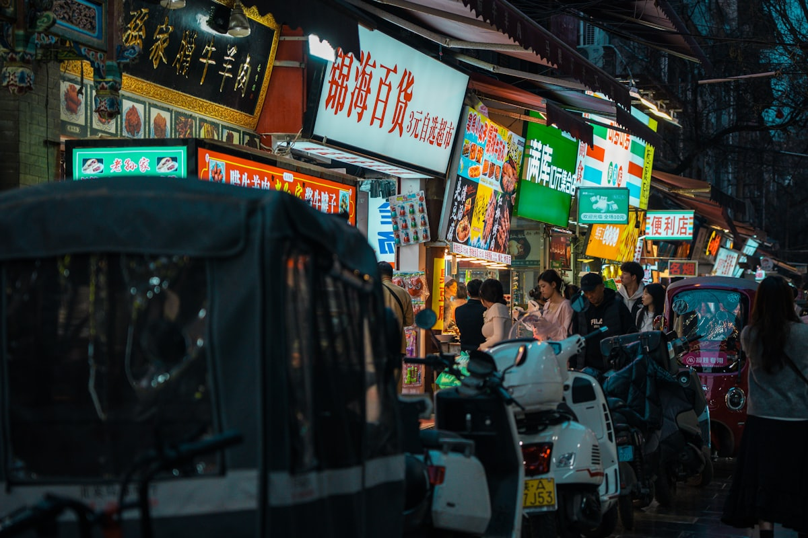

1核心结论
西安
→
兵马俑/华清宫
→
华山
→
壶口瀑布
→
延安
→
回西安
→
返程
🕐 10 天怎么安排最合理
陕西是一省看尽周秦汉唐的宝地：西安的城墙与兵马俑是历史符号，华山的险、壶口的壮、延安的红各占一极。10 天刚好走完「西安 + 华山 + 壶口 + 延安」这条最经典的南北纵线：前 3 天泡在西安，第 4 天上华山，第 5–6 天北上壶口与延安，最后再回西安收尾。高铁网发达，城市间中转基本在 1–3 小时。
| 事项 | 结论 |
|---|---|
| 事项 | 结论 |
| 推荐方案 | 10 天 9 晚：西安（5 晚）+ 华阴（1 晚）+ 壶口/宜川（1 晚）+ 延安（2 晚） |
| 返程约束 | 第 10 天从西安返程 |
| 行程链 | 西安 → 华山 → 壶口 → 延安 → 西安 |
| 预算（人均） | 经济 4500–6000 ／ 标准 7000–9500 ／ 舒适 12000–16000 |
| 三件提前事 | ① 陕博/兵马俑提前 3–7 天预约 ② 华山索道提前订、避开节假日 ③ 壶口与华山出发前查天气 |
| 季节提醒 | 春秋最舒服；夏季关中炎热、秦岭凉爽，冬季华山栈道易封 |
| 交通卡 | 西安地铁扫码进站，去华山/延安高铁直达 |
⚠️ 两个容易忽略的点
① 陕西历史博物馆免费但极难约，需提前 7 天在官方渠道抢票，抢不到可退而求其次去西安博物院（小雁塔）。② 华山和壶口都受天气影响大：大风大雨华山索道会停运，汛期壶口水量暴涨、观景更震撼，出发前一天务必查天气预报。
2推荐行程 · 10 天版
以下为 10 天 9 晚的推荐节奏：西安 3 天后出城北上，壶口与延安连走同一条北线，最后 2 天回西安慢逛。每日主景点 ≤2 个，留足交通与休息时间。
| 日期 | 行程 | 过夜地 | 主题 |
|---|---|---|---|
| D1 抵西安 | 入住钟楼/回民街一带，傍晚回民街 + 钟鼓楼夜景 | 西安·钟楼 | 抵达 + 预热 |
| D2 | 兵马俑 + 华清宫一日 → 晚上《长恨歌》（可选） | 西安·临潼/市区 | 秦唐主题 |
| D3 | 陕西历史博物馆 + 大雁塔 + 大唐不夜城 | 西安·曲江 | 盛唐气象 |
| D4 | 高铁赴华阴，华山一日（西上北下） | 华阴 | 华山论剑 |
| D5 | 华山 → 壶口瀑布（约 3.5h 车程） | 壶口/宜川 | 黄河咆哮 |
| D6 | 壶口 → 延安：宝塔山 + 杨家岭 + 枣园 | 延安 | 红色圣地 |
| D7 | 延安 → 西安（动车约 2.5h），下午城墙骑行 + 永兴坊 | 西安·城内 | 回城休整 |
| D8 | 法门寺或乾陵一日，傍晚回西安 | 西安 | 佛骨圣地 |
| D9 | 大唐芙蓉园 + 曲江池，或秦岭翠华山（二选一） | 西安·曲江 | 山水收尾 |
| D10 返程 | 上午自由活动/采购伴手礼，下午返程 | — | 收尾 |
🧭 路线可调原则
想轻松点就把华山放独立一天（D4），壶口+延安必走同一条北上线路；法门寺与乾陵二选一，都去需留整天。带老人孩子建议砍掉华山长空栈道段，或选华山索道往返。
3逐小时时间线
以下为 10 天全程的逐小时执行时间线，可当作「当天打开照着走」的清单。标注 ※ 的可选项视体力与天气取舍。
D1 · 抵达西安
入住钟楼/回民街
🚇 抵达日
| 时间 | 事项 |
|---|---|
| 14:00–17:00 | 抵达西安（高铁到西安北/西安站，飞机到咸阳机场），地铁进城入住 |
| 17:30–18:30 | 办理入住（推荐钟楼/回民街一带，近地铁与景点） |
| 19:00–21:00 | 回民街晚餐：肉夹馍、羊肉泡馍、凉皮，逛钟鼓楼夜景 |
| 21:00 | 回酒店休息，调整状态 |
钟楼周边住宿最方便，步行可达回民街、城墙、书院门。抵达早的话可先上西安城墙看日落。
D2 · 兵马俑 + 华清宫
秦唐主题一日
🏛 秦唐日
| 时间 | 事项 |
|---|---|
| 08:00–08:30 | 地铁/旅游专线赴临潼（市区约 1h 车程） |
| 08:30–12:30 | 秦始皇兵马俑博物馆（参考价 120 元，需预约）：一号坑千人军阵 + 二号坑 + 三号坑 + 陈列厅 |
| 12:30–13:30 | 午餐：临潼县城，尝关中家常菜 |
| 13:30–16:30 | 华清宫（参考价 120 元）：骊山、唐代温泉汤池、五间厅（西安事变旧址） |
| 19:00–20:30 | ※ 《长恨歌》实景演出（需另购票约 300+ 元，可选），不看的可提前返市区 |
| 21:00 | 返回西安市区休息 |
兵马俑建议请讲解员或租讲解器，不然容易『看了个寂寞』。周一博物馆可能闭馆，行程前先确认。
D3 · 陕博 + 大雁塔 + 大唐不夜城
盛唐气象一日
🏮 盛唐日
| 时间 | 事项 |
|---|---|
| 08:30–12:30 | 陕西历史博物馆（免费需提前 7 天预约，珍宝馆另 30 元）：周秦汉唐国宝、何家村金银器 |
| 12:30–13:30 | 午餐：小寨/大雁塔周边 |
| 14:00–17:00 | 大慈恩寺 + 大雁塔（大慈恩寺 50 元，登塔另 25 元）：玄奘译经处，登塔俯瞰长安 |
| 18:00–21:00 | 大唐不夜城（免费）：灯光街景、行为艺术、不倒翁小姐姐 |
| 21:30 | 回酒店 |
陕博是『最难约的免费博物馆』之一，提前 7 天 0 点放票；约不到就换西安博物院（小雁塔，免费好约）。
D4 · 华山一日
五岳之险
🏔 华山日
| 时间 | 事项 |
|---|---|
| 07:00 | 高铁西安北→华山北（约 30 分钟），转景区免费巴士 |
| 08:00–08:30 | 进山 |
| 08:30–17:00 | 华山（门票参考价 160 元，西峰索道 140 元/北峰 80 元，区间车另计）：西上北下，走长空栈道/鹞子翻身（另收费） |
| 17:00–18:30 | 下山，宿华山脚下（华阴市） |
| 19:00 | 晚餐：华阴夜市 |
推荐『西上北下』：西峰索道上、北峰索道下，省体力且景点全覆盖。恐高者避开长空栈道，全程约 5–6 小时。
D5 · 壶口瀑布
千里黄河一壶收
🌊 黄河日
| 时间 | 事项 |
|---|---|
| 07:30 | 华阴出发，包车/大巴至壶口（约 3.5–4h） |
| 11:00–14:00 | 壶口瀑布（参考价 100 元，陕西侧）：主瀑布 + 龙洞观瀑，感受黄河咆哮 |
| 14:00–15:00 | 午餐：景区周边，尝黄河鲤鱼 |
| 15:00–17:00 | 视体力去克难坡或直接宿壶口/宜川 |
| 18:00 | 晚餐：当地农家菜 |
壶口分陕西、山西两岸，陕西侧观瀑位更近主瀑。汛期（7–9 月）水势最壮，冬春可看冰瀑，注意岸边湿滑。
D6 · 延安
红色圣地一日
⭐ 延安日
| 时间 | 事项 |
|---|---|
| 07:30 | 壶口→延安（约 2h 车程） |
| 09:30–12:00 | 宝塔山（参考价 60 元）：登塔俯瞰延安城 |
| 12:00–13:00 | 午餐：延安市区 |
| 13:30–16:00 | 杨家岭革命旧址（免费）+ 枣园（免费）：窑洞、中央旧址 |
| 16:30–18:00 | 延安革命纪念馆（免费）：红色文物 |
| 19:00 | 晚餐：延安夜市，尝洋芋擦擦 |
延安红色景点基本免费，凭身份证入馆，18:00 前闭馆注意时间。晚上可看《延安保育院》等红色演出。
D7 · 回西安 + 城墙
回城休整一日
🚄 回城日
| 时间 | 事项 |
|---|---|
| 07:30 | 延安动车→西安北（约 2.5h） |
| 11:00–12:00 | 午餐 |
| 13:00–17:00 | 西安城墙（参考价 54 元）：租自行车环骑一圈（约 14km，1.5h） |
| 17:30–19:30 | 永兴坊（免费）：摔碗酒、非遗小吃街 |
| 20:00 | 回酒店休息 |
城墙骑行是西安经典体验，傍晚上墙看日落与华灯初上最佳。骑不动可以只走南门段。
D8 · 法门寺/乾陵
佛骨圣地一日
🙏 人文日
| 时间 | 事项 |
|---|---|
| 08:00 | 出发（法门寺距西安约 1.5h 车程） |
| 09:30–14:00 | 法门寺（参考价 120 元，含合十舍利塔）：地宫珍宝、佛指舍利 |
| 14:00–15:00 | 午餐：法门寺周边 |
| 15:30–17:30 | ※ 乾陵（参考价 100 元，可选）：武则天无字碑、朱雀门神道 |
| 18:30 | 返回西安市区 |
法门寺景区很大，核心是唐代地宫出土文物与合十舍利塔；对佛教无感的可换成乾陵+茂陵一日。
D9 · 曲江/秦岭
山水收尾一日
🏞 放松日
| 时间 | 事项 |
|---|---|
| 08:30–12:00 | 大唐芙蓉园（参考价 120 元）或 秦岭翠华山（参考价 65 元，二选一） |
| 12:00–13:00 | 午餐 |
| 13:30–17:00 | 曲江池遗址公园（免费）散步，大雁塔周边购物 |
| 18:30–20:00 | 晚餐：曲江/大唐不夜城周边 |
| 20:30 | 回酒店 |
芙蓉园适合喜欢唐风演出的人，翠华山适合想爬山看天池的人。都想去就上午一个、下午一个，别贪多。
D10 · 返程
采购伴手礼 + 回家
🚄 返程日
| 时间 | 事项 |
|---|---|
| 08:30–11:30 | 自由活动：回民街买腊牛羊肉、真空肉夹馍，陕博/兵马俑文创 |
| 11:30–12:30 | 午餐 |
| 13:00–16:00 | 退房，赴西安北站/咸阳机场，返程 |
| 16:30 | 抵达北京/出发地，结束陕西 10 天行程，注意携带身份证件与行李 |
伴手礼推荐：腊牛羊肉、富平柿饼、琼锅糖、西凤酒、兵马俑文创（景区外更便宜）。
4景点图鉴
必去（必去）/ 顺路（顺路）/ 可跳过（可跳过）。
必去
秦始皇兵马俑 参考价 120 元
世界第八大奇迹。一号坑千人军阵，秦朝军制实景，提前预约并建议请讲解。
 必去
必去华清宫 参考价 120 元
唐代皇家温泉行宫。骊山 + 五间厅，西安事变旧址，晚间有《长恨歌》。

必去华山 门票 160 元+索道
五岳之险。长空栈道、鹞子翻身，『西上北下』省体力，恐高慎行。

必去壶口瀑布 参考价 100 元
黄河最壮观的瀑布。千里黄河一壶收，汛期水势最猛、气吞山河。

顺路大雁塔 大慈恩寺 50 元
玄奘译经之所。登塔俯瞰西安，紧邻大唐不夜城，夜景绝佳。

顺路陕西历史博物馆 免费（需预约）
周秦汉唐文物宝库。何家村金银器，免费但需提前 7 天抢票。

顺路西安城墙 参考价 54 元
保存最完整的古城墙。骑行环城 14km，日落与夜景最佳。
可跳过
延安宝塔山 参考价 60 元
革命圣地标志。宝塔 + 延河水，红色教育必打卡。
图片为 Unsplash 主题图（兵马俑、华山、壶口等均为陕西实景），用于页面配图。更多免费景点：大唐不夜城、永兴坊、大明宫遗址公园、西安博物院。
5路线地图
点击左侧节点可在地图上定位；点击地图 marker 会高亮对应节点。坐标为 WGS-84 转 GCJ-02 纠偏后标注。
6预算明细（三档）
以下为单人、不含购物的估算；门票为旺季参考价，以现场为准。往返交通按高铁计（华北/华中周边出发约 1000–1500 元），省内段（西安↔华山↔延安）高铁约 300–500 元，壶口/法门寺需包车另计。
| 项目 | 经济（4500–6000） | 标准（7000–9500） | 舒适（12000–16000） |
|---|---|---|---|
| 往返交通 | 高铁约 1000–1500 | 高铁/飞机约 2000–3000 | 飞机+接送约 3500–4500 |
| 住宿（9 晚） | 青旅/快捷 900–1400 | 连锁酒店 2000–3000 | 钟楼/曲江星级 5000–6500 |
| 门票 | 基础景点约 500 | 含华山索道约 900 | 全含+《长恨歌》约 1400 |
| 餐饮（10 天） | 700–900 | 1400–1800（含老字号） | 2200–3000 |
| 省内交通 | 高铁+大巴 400–600 | 包车拼车 900–1200 | 包车 1800–2500 |
💰 标准档示例账单（人均约 8500 元）
高铁往返 2500 + 住宿 9 晚 2500（双人分 5000）+ 门票 900 + 餐饮 1600 + 省内交通 1000 ≈ 8500 元。大头在往返交通与华山索道，提前订可省 500–1000 元。
7备选方案
7.1 只看精华的 6 天版
- D1 抵达西安+回民街
- D2 兵马俑+华清宫
- D3 陕博+大雁塔+不夜城
- D4 华山
- D5 壶口（当日往返较赶）
- D6 城墙骑行+返程
7.2 亲子/长辈版调整
砍掉华山（或只乘索道不上险段），壶口缩短为半天；加入陕西自然博物馆、大明宫遗址公园、大唐芙蓉园等更轻松的项目，节奏放缓到每天 1 个主景点。
7.3 秋冬版
11 月后游客少、红叶装点华山与秦岭；冬季壶口冰瀑震撼但岸边滑，务必防滑。延安 12–2 月较冷，室内场馆仍可逛，酒店价格比旺季低 20–30%。
8交通与住宿
8.1 陕西 ⇄ 各地 交通
| 方式 | 时长 | 参考价 | 备注 |
|---|---|---|---|
| 高铁（推荐） | 视出发地 2–8h | 二等座 200–1000 元 | 西安北站为西北枢纽，班次密集 |
| 飞机 | 视出发地 1–4h | 400–2000 元 | 咸阳机场，地铁 14 号线直达市区 |
| 自驾 | 视出发地 | 高速+停车费 | 西安市区停车难，城内建议地铁 |
⚠️ 省内交通核心提醒
西安到华山高铁仅 30 分钟、到延安约 2.5 小时，城市间优先高铁；去壶口、法门寺、乾陵这类景点无高铁，需包车或旅游大巴，提前订好回程车。
8.2 省内交通
- 高铁：西安↔华山北 30 分钟、西安↔延安 2.5h，二等座约 55–100 元
- 地铁：西安多条线路覆盖主要景点，扫码进站，单程 2–7 元
- 旅游专线：去兵马俑/华清宫有游5专线（306 路），约 1h 车程
- 包车/拼车：去壶口、法门寺、乾陵建议包车，约 400–800 元/天
- 租车自驾：关中平原路况好，但进城停车贵、景区停车排队
8.3 住宿区域推荐
| 区域 | 价格/晚 | 优点 | 短板 |
|---|---|---|---|
| 钟楼/回民街 | 快捷 250–400 / 星级 600–1200 | 步行到回民街、城墙，地铁 2 号线 | 游客多，旺季紧张 |
| 大雁塔/曲江 | 快捷 300–450 / 星级 700–1400 | 近陕博、不夜城，夜景好 | 离高铁站较远 |
| 西安北站 | 快捷 200–350 | 近高铁站，中转方便 | 离老城景点远 |
| 华阴（华山脚下） | 民宿/快捷 150–300 | 次日爬山方便 | 选择少，旺季靠抢 |
9美食清单
🍜 必吃经典
- 肉夹馍（腊汁肉/腊牛肉）
- 羊肉泡馍、小炒泡馍
- 凉皮（米皮/擀面皮）
- Biangbiang 面、油泼面
- 臊子面、葫芦头
🥮 伴手礼
- 腊牛羊肉（真空装）
- 富平柿饼、琼锅糖
- 西凤酒、黄桂稠酒
- 兵马俑/陕博文创
🍢 小吃街
- 回民街（游客向，认准老字号）
- 洒金桥（本地人爱去）
- 永兴坊（摔碗酒+非遗小吃）
- 大皮院、西羊市
📍 去哪吃
- 回民街-钟楼一带（老字号扎堆）
- 永兴坊（民俗体验）
- 大唐不夜城周边（夜景+小吃）
- 建国路/东新街（深夜食堂）
⚠️ 美食防坑
① 回民街越往主街越贵，往大皮院、洒金桥钻更划算；② 泡馍要自己掰馍才有仪式感，掰得越小越入味；③ 认准『老孙家/同盛祥』等老字号分店，别被景区『正宗』招牌忽悠。
10出行贴士
10.1 行前清单
- 身份证、充电宝
- 舒适步行鞋（日行 2 万步）
- 防晒霜、墨镜（夏季）
- 华山防滑手套、登山杖
- 陕博、兵马俑提前 3–7 天预约
- 华山索道票提前 1–3 天订
- 下载西安地铁乘车码
- 出发前查华山/壶口天气
10.2 防踩坑
🧳 四条提醒
① 陕博预约是头等大事，约不到当天基本进不去；② 华山索道大风会停运，行程留缓冲；③ 壶口两岸注意落水安全，别越过护栏；④ 历史类景点建议请讲解，自助看容易走马观花。
🌟 一句话总结
陕西是「一省看懂中国史」的地方——兵马俑看秦的军阵、华清宫看唐的奢华、华山看山的险峻、壶口看河的咆哮、延安看红色的传承，10 天把周秦汉唐到现代红都串成一条线。提前约好陕博和兵马俑，剩下的交给高铁和好天气。